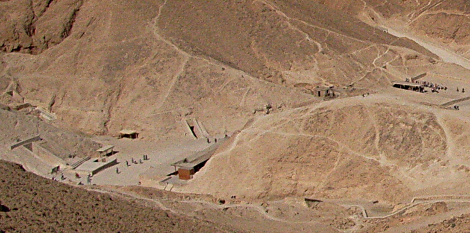

Egypt Trav-E-Log ©
Valley of Kings
|  |
| This photo, taken on a tripod from ridge line between Valley of the Kings and the Deir el-Bahri complex, shows five tomb entrances. A line of people marks the entrance on photo, right, with the white path above them leading to another tomb entrance. The tomb entrance near center of photo is easy to see. The other two are on the left edge of photo, one above the other. |
18 Nov 2010, Luxor, Egypt
-------------------------------------------
Grand plan today: Valley of the Kings, then hike on path over the ridge line to Al-Dier-Bahari temple complex, and finally visit the temple of Ramesses III at Medinet Habu. All part of the necropolis on the West bank of Luxor, Egypt, a UNESCO World Heritage Site. First disappointment: NO PHOTOS permitted in Valley of the Kings. Well actually, that is not true. Photos were allowed IF YOU PAY OFF THE RIGHT GOVERNMENT OFFICIAL(s). But for common folks like you and me, only option is to purchase inferior quality, mass-produced photos taken by someone who did pay the bribe. Or sneak around taking cell phone pics like some tourists were doing. I suggest the UNESCO world heritage officials REMOVE the designation from any location that prohibits/discourages tourist photography.
-------------------------------------------
Same photo as above, but relatively unmagnified and uncropped. The parking area and admission entrance is the black strip on the right. One is free to walk around the valley after paying admission. Entering a tomb is quite the experience, and I invite the reader to check out the various Wikipedia entries for "Valley of the Kings" for detailed photos and information. |
|
The hike over the ridge line did not look very difficult, so up I went, turning around to take this photo with the aid of a tripod.
Question? Contact me at the Juno.com address Dancer2SEAsia.
Life is Good When You Travel! Start planning your next trip!